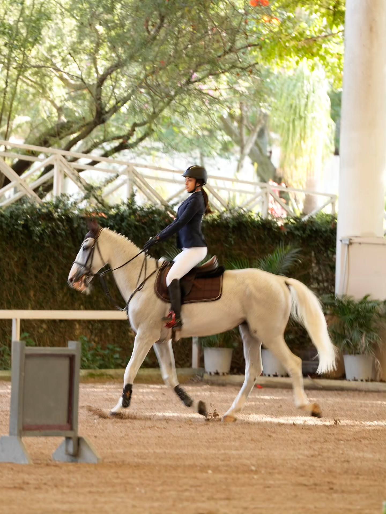
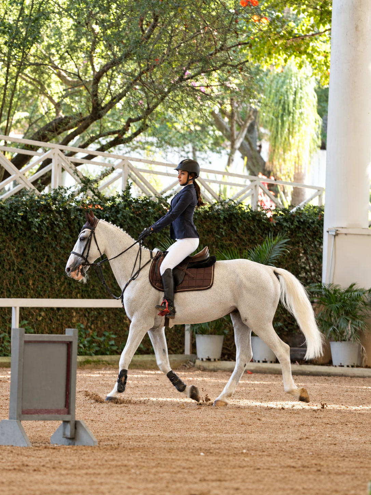
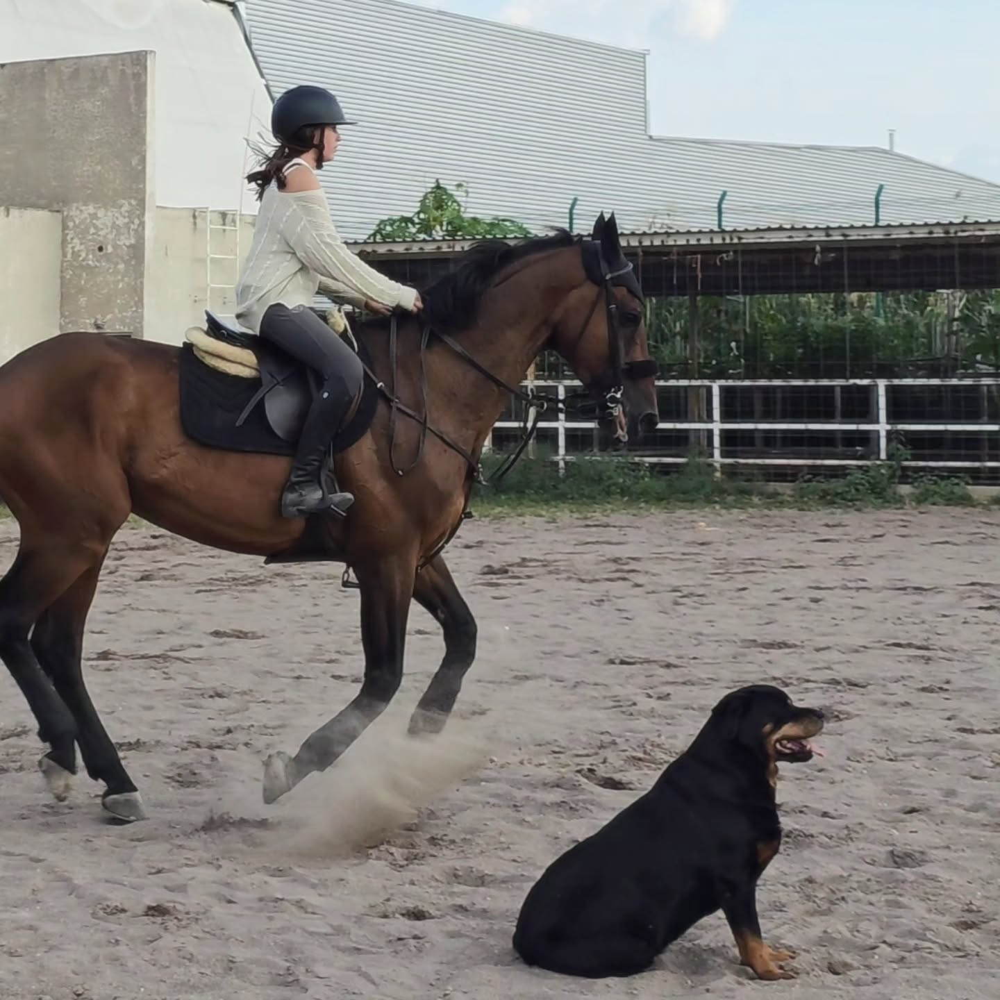
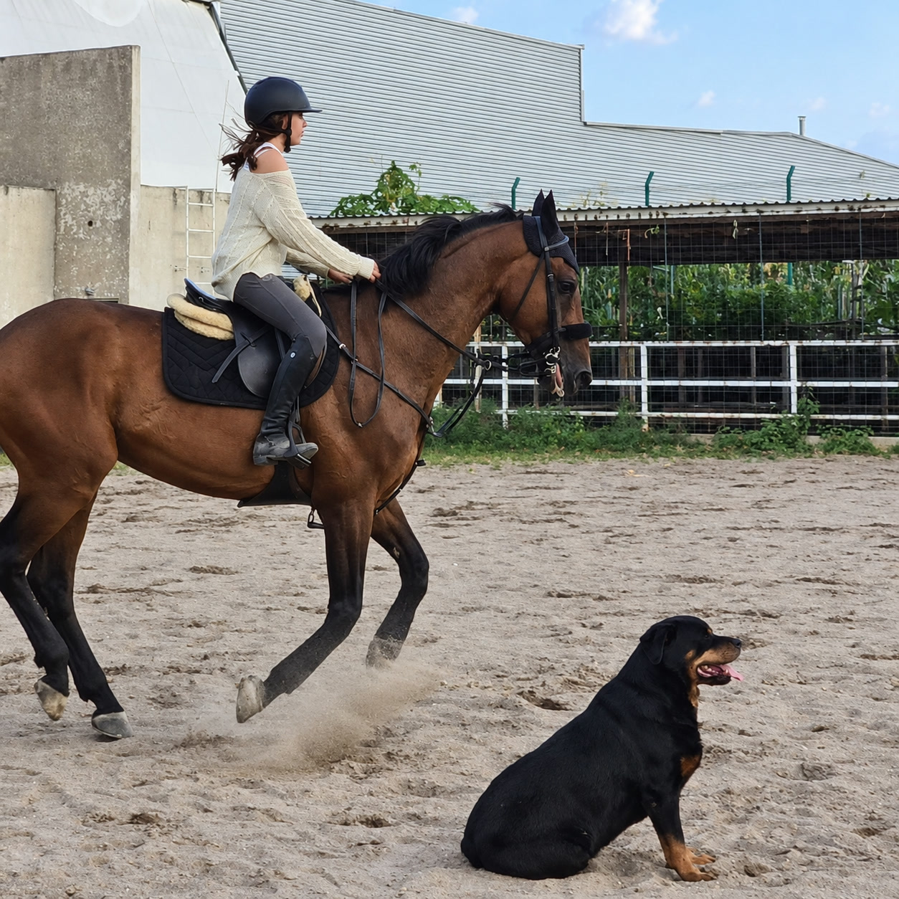
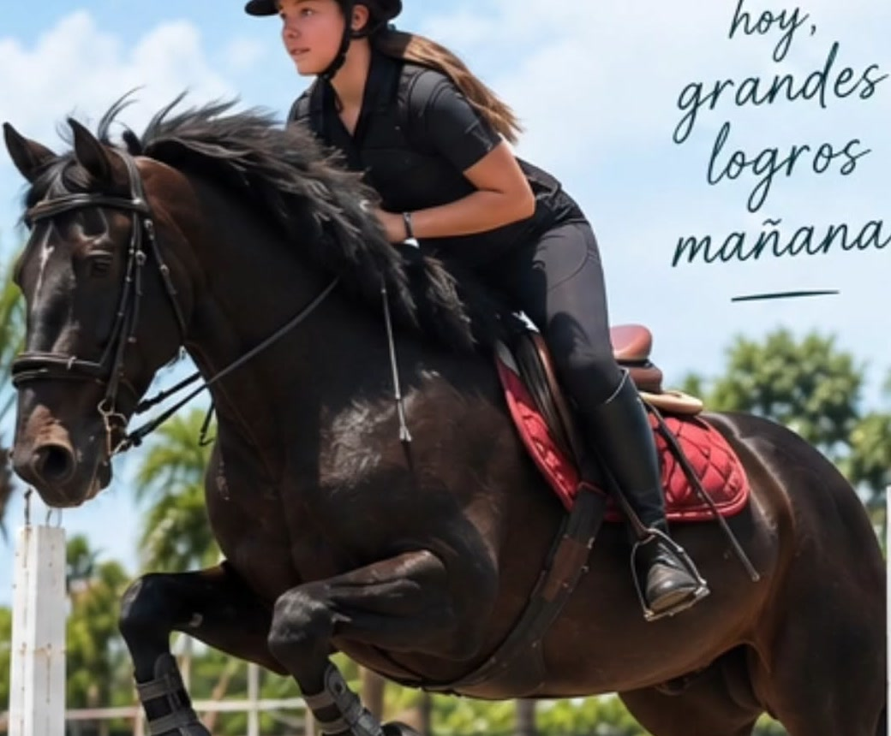
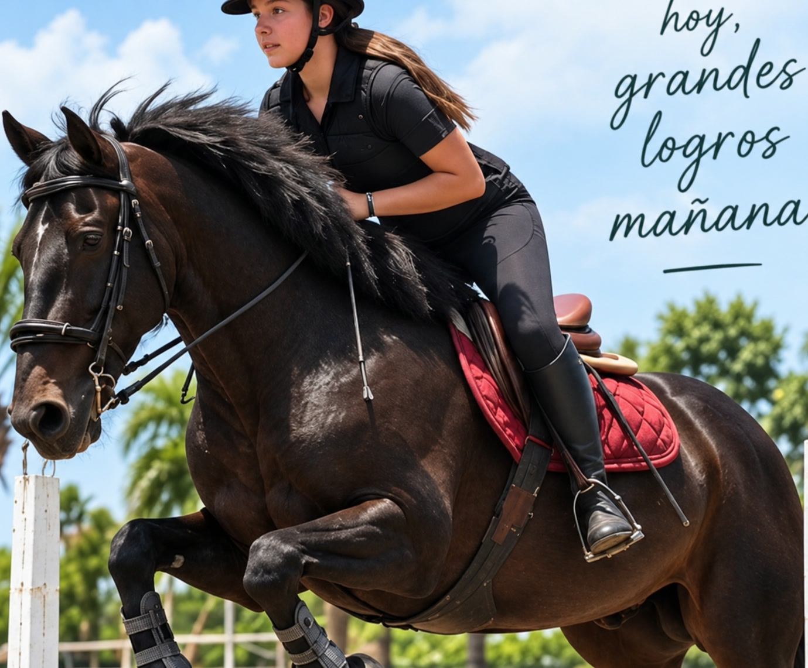
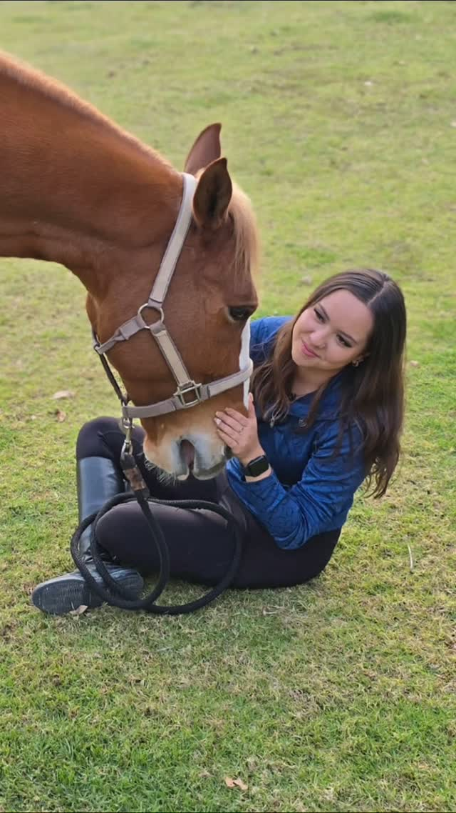
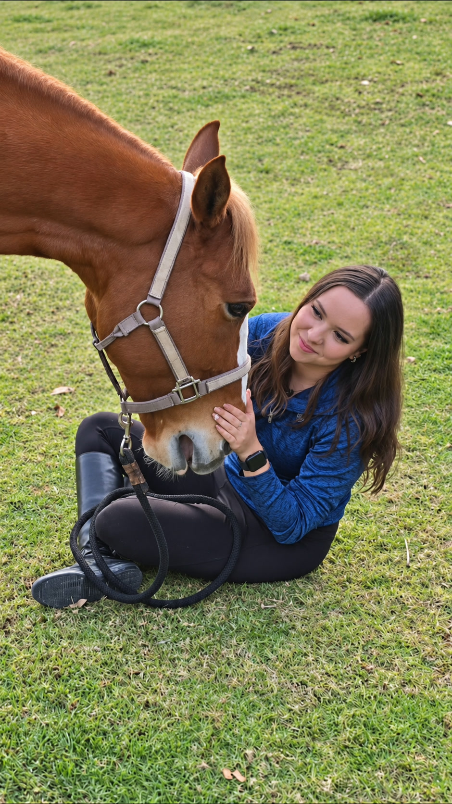
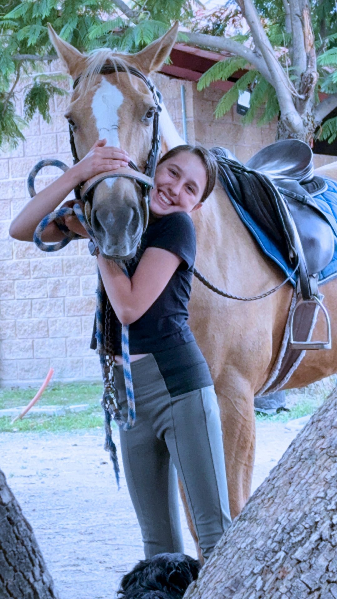
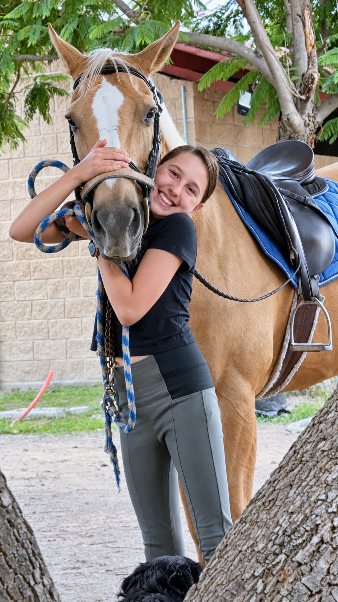

Las mismas historias,
con más claridad.
Comparación de las fotografías originales y las copias mejoradas con IA. Los archivos originales se conservan intactos. La mejora reduce la apariencia borrosa y ajusta el color; algunos detalles finos pueden haber sido reconstruidos por la IA.
Selecciona una foto original para abrirla, o una foto mejorada para ver su versión PNG de máxima calidad.
Portada




En la pista




Salto




Compañía




Conexión



